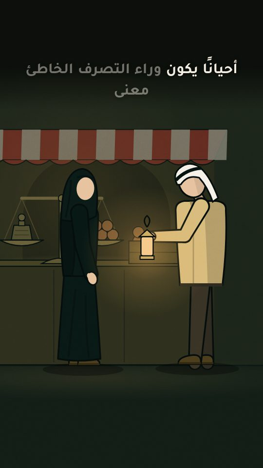
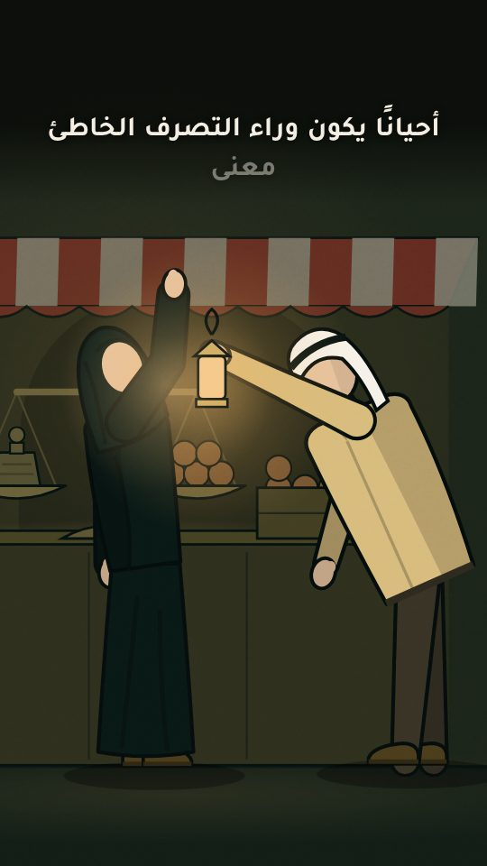
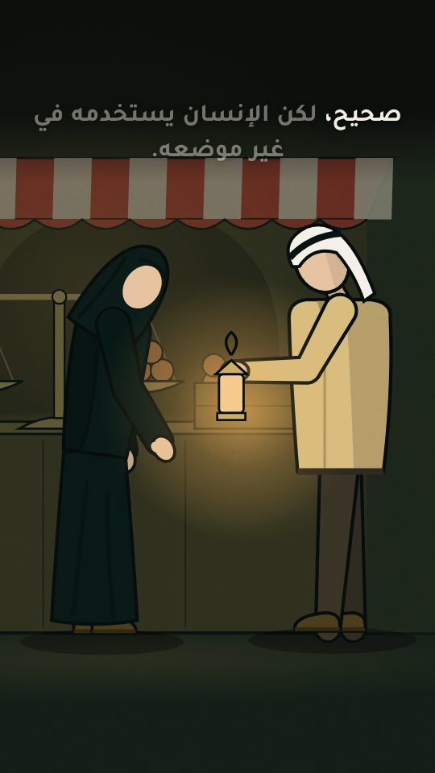
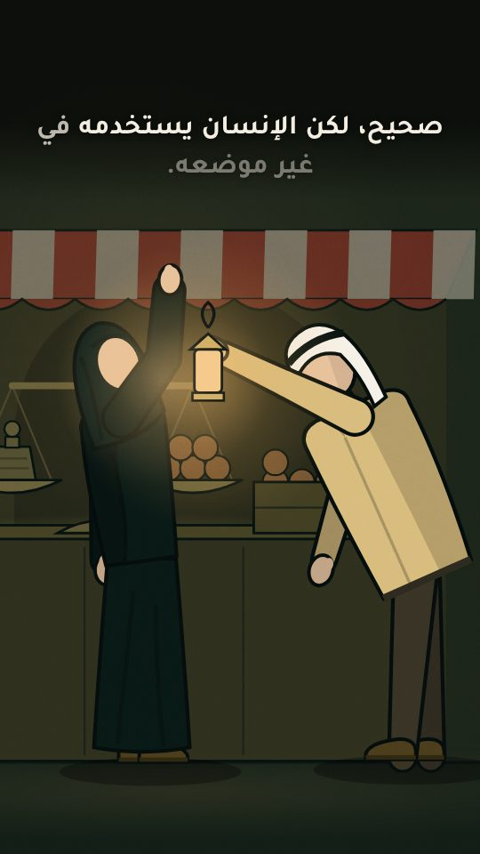
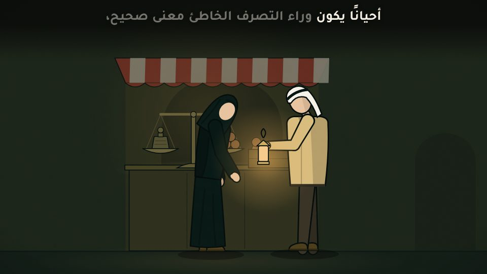
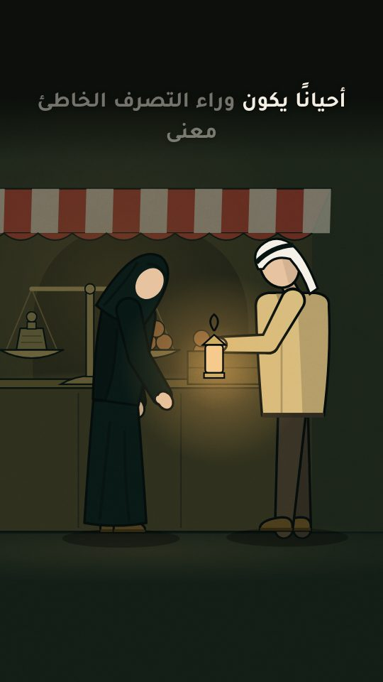
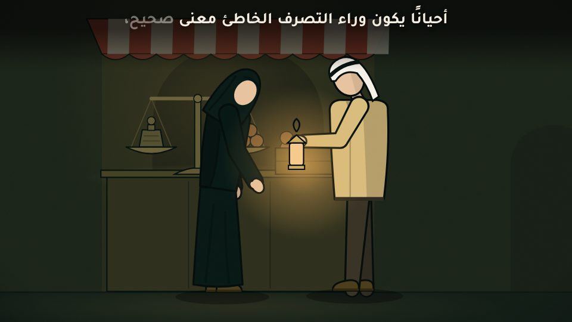
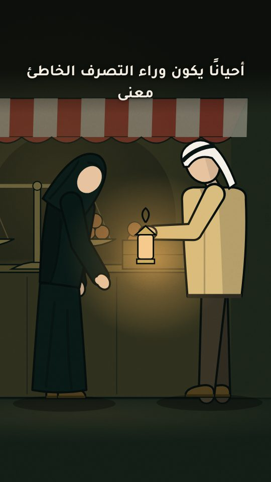
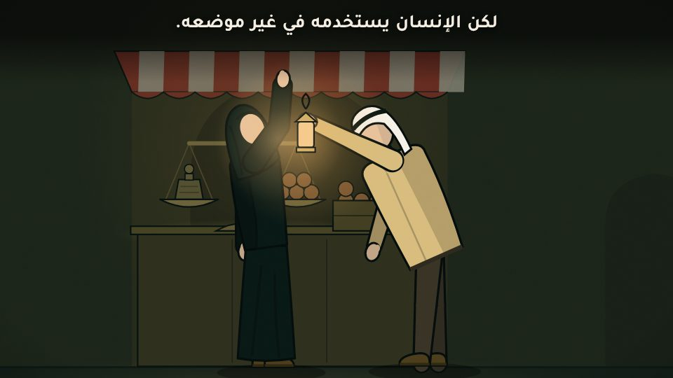

المصباح: من البضاعة إلى الوجه c2-s2
ما كان غير واضح
الفعل بدأ بالمصباح في وجه الزبونة، ثم البضاعة، ثم الوجه مرة ثانية (تكرار).ما تغيّر في التصميم
الترتيب من الاستعمال الصحيح إلى الخاطئ مرة واحدة: المصباح منخفض فوق البرتقال من أول المشهد والزبونة تنظر إليه، ويشتد ضوؤه عند «معنى صحيح»؛ ثم عند «يستخدمه» يُرفع إلى وجهها فتحجب عينيها وتميل للخلف حتى النهاية.اختبار الهاتف (390 بكسل)
المصباح فوق البضاعة ثم أمام الوجه واليد الحاجبة واضحة؛ البضاعة المضاءة أخفت بسبب المساء.قبل (ch2-v3)


إطار 30


إطار 75


إطار 110


إطار 170
بعد (ch2-v4)


إطار 30


إطار 95


إطار 165


إطار 205